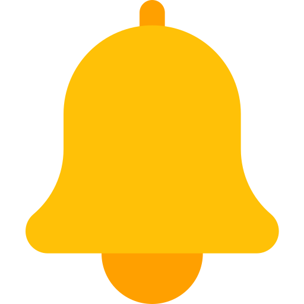
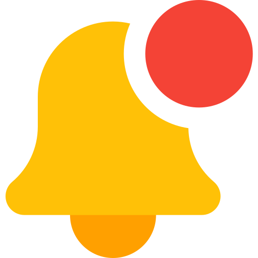

<nav class="navbar navbar-expand-lg navbar-dark bg-dark">
  <button class="navbar-toggler" type="button" data-toggle="collapse" data-target="#navbarSupportedContent" aria-controls="navbarSupportedContent" aria-expanded="false" aria-label="Toggle navigation">
    <span class="navbar-toggler-icon"></span>
  </button>

  <div class="collapse navbar-collapse" id="navbarSupportedContent">
    <ul class="navbar-nav mr-auto">
      <li class="nav-item " id="tab-menu-tienda">
        <a class="btn nav-link" (click)="redihome()">Inicio</a>
      </li>
      <li class="nav-item" id="tab-editar-tienda">
        <a class="btn nav-link" (click)="rediperfil()">Perfil Tienda</a>
      </li>
      <li class="nav-item" id="tab-mis-bicis">
        <a class="btn nav-link" (click)="redibicicletas()">Mis Bicis</a>
      </li>
      <li class="nav-item" id="tab-tienda-donacion">
        <a class="btn nav-link" (click)="redidonaciones()">Donaciones</a>
      </li>
      <li class="nav-item" id="tab-tienda-alquiler">
        <a class="btn nav-link" (click)="redialquileres()">Alquileres</a>
      </li>
      <li class="nav-item" id="tab-notificaciones">
      <ion-buttons slot="end" style="padding: 10px;">
        
        
      </ion-buttons>
    </li>
    </ul>
    <form class="form-inline my-2 my-lg-0" >
      <a class="btn btn-outline-success my-2 my-sm-0" style="color:white;border-color:white" (click)="salir()">Cerrar Sesión</a>
    </form>
  </div>
</nav>

